BasicPlus — Interfaz gráfica
Tercer volumen de la documentación de BasicPlus, dedicado a la GUI: el módulo
Gui de la librería estándar, sus widgets y los formularios. Complementa al
Manual del lenguaje y a la
Referencia de la librería estándar.
18. Introducción
La interfaz gráfica de BasicPlus es un módulo más de la librería estándar: Gui. Un programa
construye un árbol de widgets (pantalla, etiquetas, botones, tablas…), engancha eventos y entra en el
lazo de eventos con Gui.run(). El mismo programa —el mismo .mod— se ejecuta sin
cambios en el PC y en el microcontrolador.
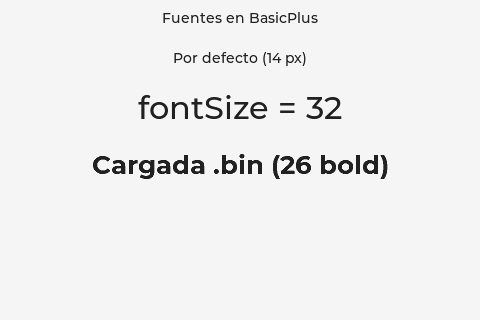
18.1 Las tres VM
El árbol de widgets (el modelo) es portable y vive en el núcleo; lo que cambia es quién lo pinta:
| VM | Render | Dónde |
|---|---|---|
| miVM (Java) | Swing | PC — vista previa rápida desde el IDE |
| VM-C (host) | LVGL + ventana SDL | PC — idéntica al render de la placa |
| VM-C (device) | LVGL + pantalla | Microcontrolador (ESP32-P4, …) |
Las tres ejecutan el mismo bytecode y construyen el mismo modelo de widgets; la diferencia es sólo el backend de pintado. Por eso una GUI escrita y probada en el PC se sube a la placa sin tocar el código (sólo, en su caso, los pines o el tamaño de pantalla).
El modelo se puede volcar como texto con Gui.__guiDumpTree(): es la fuente de verdad que
comparten las tres VM y la base de la paridad. A lo largo de este volumen lo usamos para mostrar la
estructura de cada ejemplo sin depender de una captura.
18.2 Cómo se ejecuta
- Vista previa en el PC — desde el IDE, o por línea de comandos con la VM-C compilada
con render LVGL (
make LVGL=1) y una ventana SDL. - En la placa — botón Run on Device del IDE; sube el
.mody losresources/del proyecto y lo ejecuta sobre la pantalla real. Ver la Guía del IDE.
19. Conceptos
19.1 Pantalla y árbol de widgets
Todo cuelga de una pantalla (Gui.Screen), la raíz del árbol. Cada widget se
crea indicando su padre, de modo que el árbol se arma de arriba abajo. Un ejemplo mínimo:
module Hola
import Gui
function Main()
var scr: Gui.Screen := Gui.Screen()
var txt: Gui.Label := Gui.Label(scr, "Hola, mundo")
txt.align(Gui.Align.CENTER, 0, 0)
Gui.run()
end Main
end HolaEl modelo resultante (Gui.__guiDumpTree()):
screen [480x320 align=0 +0,0]
label "Hola, mundo" [-1x-1 align=9 +0,0]
-1x-1 significa «tamaño automático» (el widget se ajusta a su contenido); más abajo se ve
cómo fijar tamaño y posición.
19.2 Component (base común)
Todos los widgets descienden de Gui.Component (que a su vez desciende de Object,
como todo en BasicPlus). Component aporta lo común a cualquier widget: texto, geometría,
alineación, color y fuente. Lo más usado:
| Miembro | Para qué |
|---|---|
align(ancla, dx, dy) | Coloca el widget respecto a su padre (ver 19.3). |
width / height | Tamaño en píxeles (propiedades; sin fijar = automático). |
fontSize | Tamaño de texto en px del catálogo compilado (ver 21.2). |
setFont(id) | Aplica una fuente cargada con Gui.loadFont (ver 21.2). |
setBgColor(c) / setTextColor(c) | Color de fondo y de texto (ver 21.1). |
Política OO. Igual que el resto de la librería, los widgets son clases: no hay campos públicos, sino propiedades. Esto mantiene la API estable entre versiones y placas.
19.3 Layout: align, posición, tamaño
El posicionamiento es por anclas (un subconjunto del ALIGN de LVGL):
align(ancla, dx, dy) ancla el widget a una zona de su padre y le aplica un desplazamiento
(dx, dy) en píxeles. Anclas disponibles en Gui.Align:
TOP_LEFT TOP_MID TOP_RIGHT
LEFT_MID CENTER RIGHT_MID
BOTTOM_LEFT BOTTOM_MID BOTTOM_RIGHTEjemplo: una etiqueta arriba-centro, desplazada 20 px hacia abajo, con tamaño de texto 32:
var t: Gui.Label := Gui.Label(scr, "Título")
t.fontSize := 32
t.align(Gui.Align.TOP_MID, 0, 20)19.4 Geometría explícita y Panel
Como alternativa a align, un widget se posiciona y dimensiona a mano con las propiedades
x, y, width, height —o todo de golpe con
setBounds(x, y, w, h)—. Un Gui.Panel es un contenedor simple para agrupar
widgets; admite scroll opcional con scrollDir (Gui.ScrollDir.VER, HOR o
NONE).
var p: Gui.Panel := Gui.Panel(scr)
p.x := 10
p.y := 20
p.width := 100
p.height := 50
p.scrollDir := Gui.ScrollDir.VERBasicPlus no dibuja formas libres (líneas, círculos, canvas): la interfaz se compone con
widgets. Para un rectángulo de color basta un Panel con setBgColor. Un lienzo de
dibujo a píxel sería una ampliación futura, no está hoy.
20. Catálogo de widgets
Cada widget es una clase de Gui que desciende de Component (§19.2), así que hereda
align, tamaño, color y fuente. Aquí va el constructor y lo propio de cada uno; los
eventos (onClick, onChange) se tratan aparte en §23. Las capturas son
del render LVGL en el host.
20.1 Etiqueta y botón
Gui.Label muestra texto; Gui.Button es un botón pulsable. Ambos toman el padre como
primer argumento, y el texto a continuación.
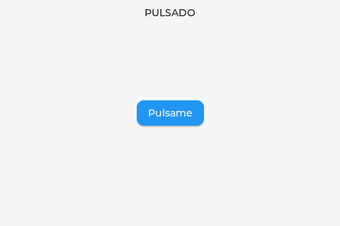
var lbl: Gui.Label := Gui.Label(scr, "esperando")
var btn: Gui.Button := Gui.Button(scr, "Púlsame")
btn.align(Gui.Align.CENTER, 0, 0)20.2 Checkbox e interruptor
Gui.Checkbox es una casilla con etiqueta; su estado está en la propiedad checked. El
interruptor Gui.Toggle (un on/off sin texto) se ve en §20.3.
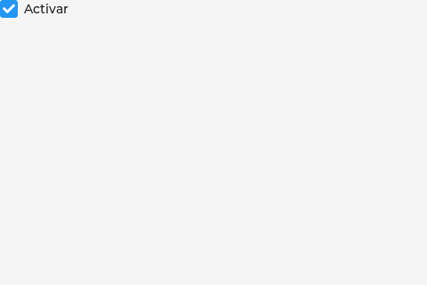
var cb: Gui.Checkbox := Gui.Checkbox(scr, "Activar")
cb.checked := true20.3 Slider, barra y valor
Gui.Slider (deslizador editable), Gui.Bar (barra de progreso, solo lectura) y
Gui.Toggle (interruptor). Slider y Bar comparten setRange(min, max) y la propiedad
value.
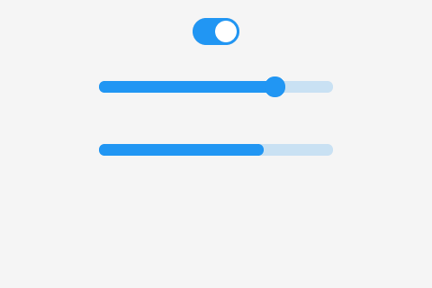
var sw: Gui.Toggle := Gui.Toggle(scr)
sw.checked := true
var sl: Gui.Slider := Gui.Slider(scr)
sl.setRange(0, 200)
sl.value := 150
var pb: Gui.Bar := Gui.Bar(scr)
pb.setRange(0, 10)
pb.value := 720.4 Entrada de texto
Gui.Dropdown es una lista desplegable (opciones separadas por \n, selección en
selected); Gui.Textarea es un campo de texto (propiedad text, y
readOnly para solo lectura). Para escribir hace falta un teclado (§20.9).
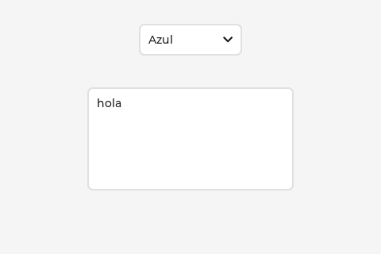
var dd: Gui.Dropdown := Gui.Dropdown(scr)
dd.setOptions("Rojo\nVerde\nAzul")
dd.selected := 2
var ta: Gui.Textarea := Gui.Textarea(scr)
ta.text := "hola"
ta.readOnly := true20.5 Tabla
Gui.Table es una rejilla de celdas de texto: setGrid(filas, cols) la dimensiona y
setCell/getCell escriben y leen por (fila, col). Fuera de rango,
getCell devuelve "".
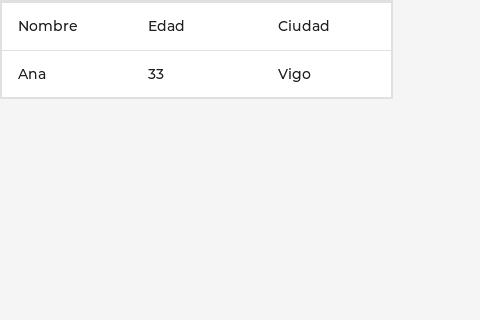
var t: Gui.Table := Gui.Table(scr)
t.setGrid(2, 3)
t.setCell(0, 0, "Nombre")
t.setCell(1, 0, "Ana")20.6 Pestañas
Gui.Tabview agrupa páginas en pestañas. addTab("nombre") crea una pestaña y devuelve su
página (un Component) sobre la que cuelgas widgets; active es la pestaña visible.
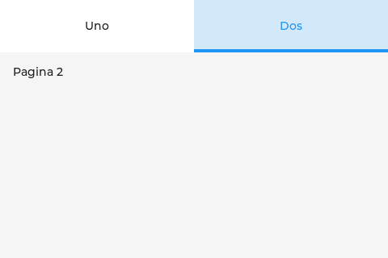
var tv: Gui.Tabview := Gui.Tabview(scr)
var p1: Gui.Component := tv.addTab("Uno")
var l1: Gui.Label := Gui.Label(p1, "Página 1")
tv.active := 120.7 Imagen
Gui.Image es el asset (se carga una vez con loadFile, formato PNG);
Gui.ImageView es el widget que lo muestra con setImage. Varias vistas pueden compartir el
mismo asset; refresh() recarga sólo si el asset cambió.
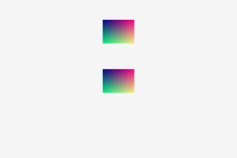
var img: Gui.Image := Gui.Image()
var ok: boolean := img.loadFile("testimg.png") // del proyecto (cwd o /app)
var v: Gui.ImageView := Gui.ImageView(scr)
v.setImage(img)20.8 Caja de mensaje
Gui.Msgbox es un diálogo modal con texto y botones (setButtons, etiquetas separadas por
\n). Al pulsar, result guarda el índice del botón.
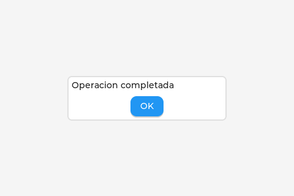
var mb: Gui.Msgbox := Gui.Msgbox(scr, "Operación completada")
mb.setButtons("OK")20.9 Lista y teclado
Gui.ListBox es una lista de ítems seleccionables (setItems, separados por \n;
selected es el índice). Gui.Keyboard es un teclado en pantalla que se engancha a un
Textarea con attach y se auto-coloca abajo. setBounds(x, y, w, h) fija
posición y tamaño de golpe.
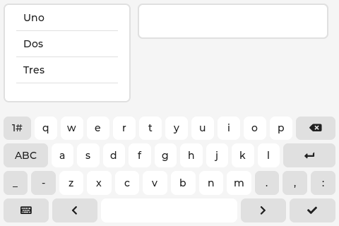
var lst: Gui.ListBox := Gui.ListBox(scr)
lst.setItems("Uno\nDos\nTres")
lst.setBounds(5, 5, 180, 140)
var ta: Gui.Textarea := Gui.Textarea(scr)
var kb: Gui.Keyboard := Gui.Keyboard(scr)
kb.attach(ta)Otros widgets del mismo patrón, no mostrados aquí: Gui.Spinbox (entero con flechas),
Gui.Led (indicador encendido/apagado) y Gui.Panel (contenedor para agrupar).
21. Color y fuentes
21.1 Color
Un color se construye con Gui.Color(0xRRGGBB) (rojo-verde-azul, un byte por canal). Se aplica a
cualquier widget con setBgColor (fondo) y setTextColor (texto):
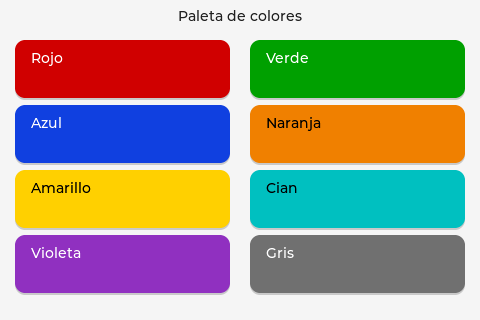
var b: Gui.Button := Gui.Button(scr, "Rojo")
b.setBgColor(Gui.Color(0xD00000)) // fondo rojo
b.setTextColor(Gui.Color(0xFFFFFF)) // texto blancoElige el color de texto según el fondo (blanco sobre oscuro, negro sobre claro) para que el contraste sea legible — como en la captura.
21.2 Fuentes
Hay dos formas de elegir la fuente de un texto.
Catálogo compilado — por tamaño
La propiedad fontSize de cualquier widget fija el tamaño de texto en píxeles, eligiendo del
catálogo de fuentes compiladas en el firmware: Montserrat en
12, 14, 16, 18, 20, 24, 28, 32, 36, 40, 48 px (por defecto, 14). El valor debe coincidir con uno
de esos tamaños; si no, se usa la fuente por defecto.
var t: Gui.Label := Gui.Label(scr, "Título")
t.fontSize := 32Fuentes cargadas — .bin en runtime
Para negrita, otras familias o tamaños fuera del catálogo, se carga una fuente .bin (formato
binfont de LVGL, el que genera la herramienta lv_font_conv). Gui.loadFont(ruta)
la lee del proyecto y devuelve un id; setFont(id) la aplica al widget. La ruta se resuelve igual
que las imágenes (carpeta del proyecto en el PC, resources/ subidos en la placa).
fontSize=32, y una .bin cargada (Montserrat 26 negrita).var fid: integer := Gui.loadFont("montserrat_26_bold.bin")
var l: Gui.Label := Gui.Label(scr, "Texto en negrita")
l.setFont(fid)Acentos y ñ. La Montserrat compilada es sólo ASCII: no trae ñ ni vocales
acentuadas. Para texto en español, genera un .bin incluyendo el rango Latin-1
(lv_font_conv --range 0x20-0xFF …) y cárgalo con loadFont.
La vista previa en miVM/Swing no parsea el .bin: el id es válido pero el texto sale con la
fuente por defecto. El render real de la fuente cargada se ve en el host LVGL y en la placa.
22. Eventos y formularios
— en preparación (handlers por slot, ficheros .win, buildForm). —
23. Ejecutar (host y placa)
— en preparación —
24. Referencia rápida Gui.*
— en preparación (tabla método → firma de las clases públicas de Gui). —